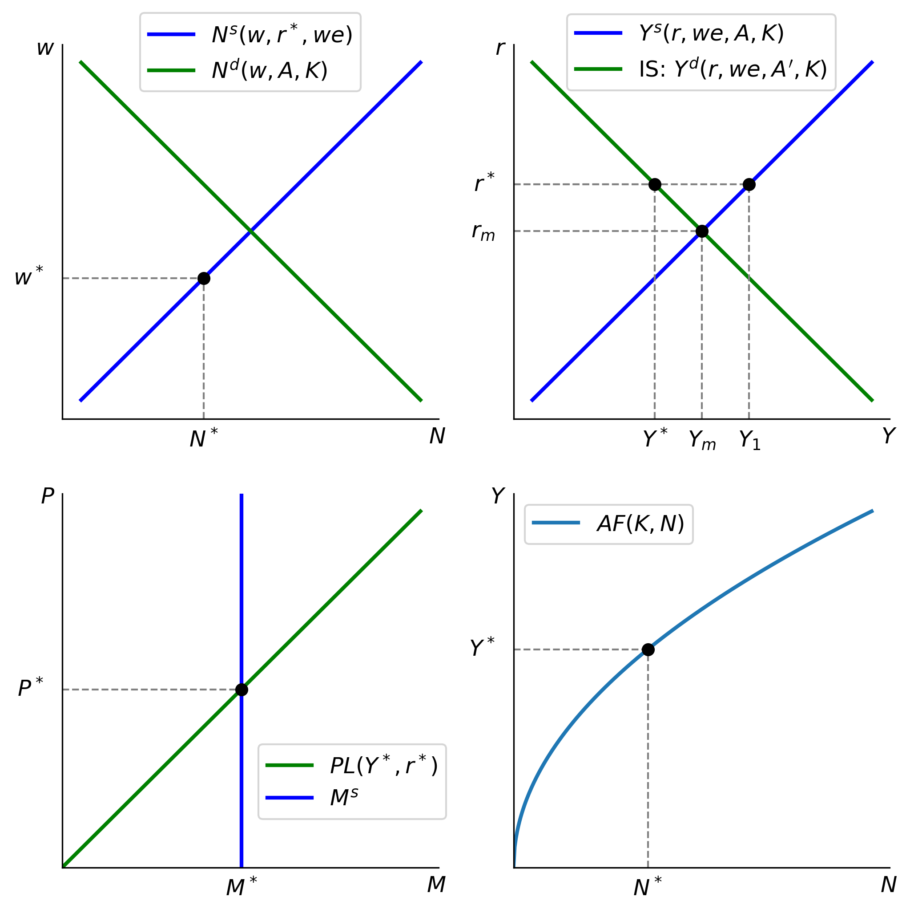
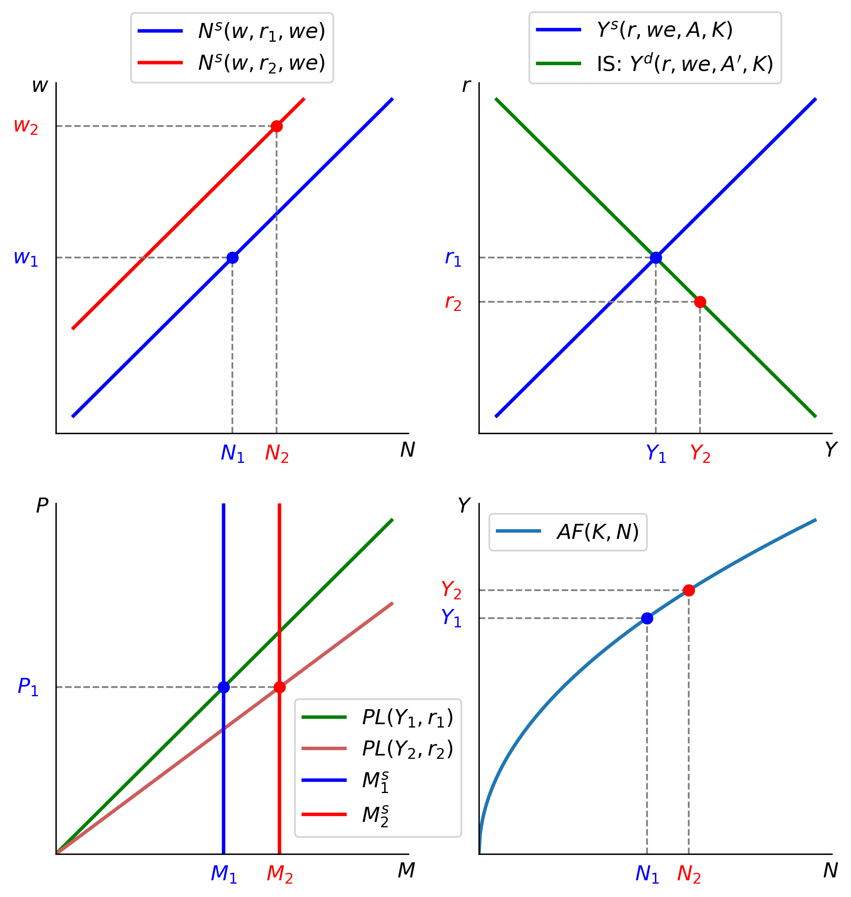
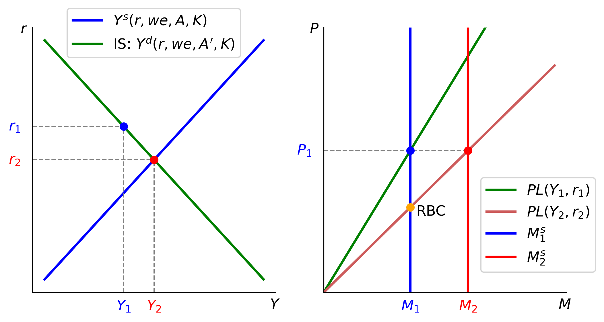
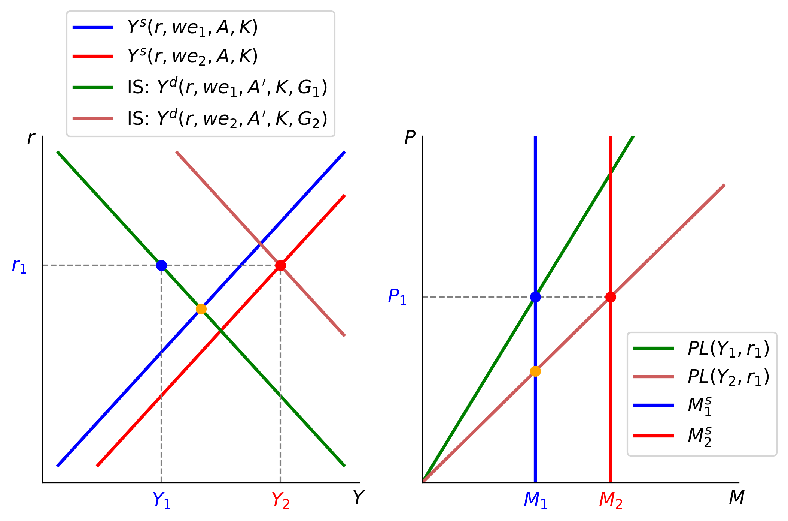
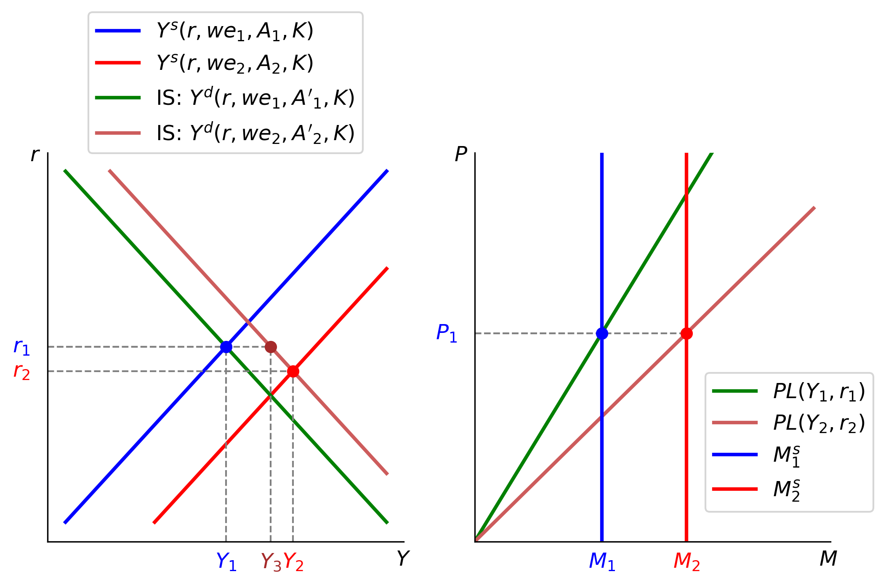
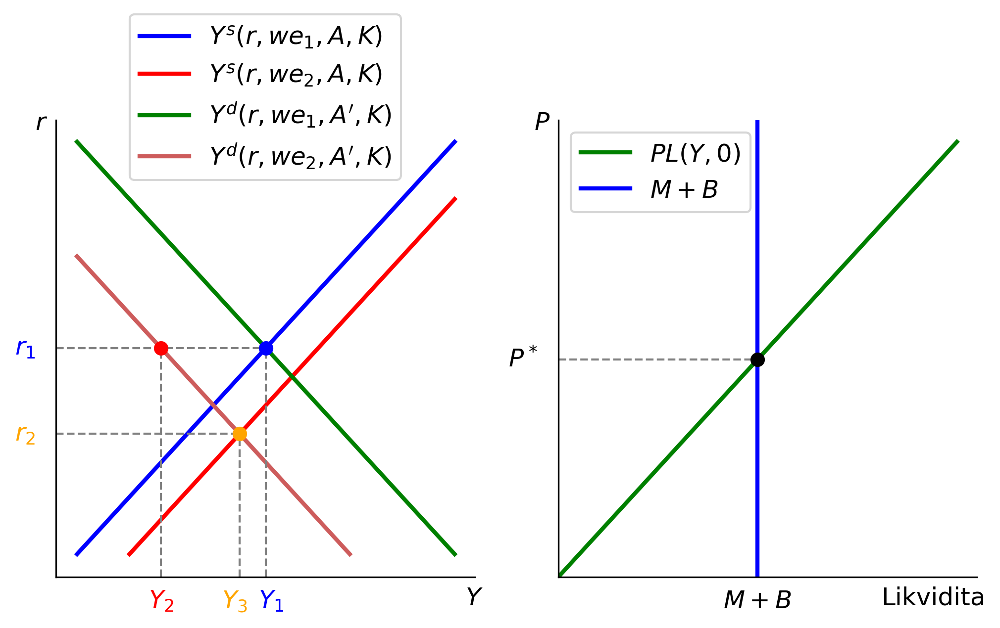

21. Súčasné keynesovské modely: nepružné ceny#
Historický vývoj keynesovských modelov hospodárskeho cyklu:
v roku 1936 predstavil John Maynard Keynes vo svojej Všeobecnej teórii zamestnanosti, úroku a peňazí myšlienku, že nepružnosť cien a miezd môže viesť k dlhodobým odchýlkam ekonomiky od plnej zamestnanosti [Key36];
koncom 30. rokov formalizoval John Hicks Keynesove myšlienky prostredníctvom modelu IS-LM [Hic37];
v 50. rokoch popularizoval Paul Samuelson keynesovskú ekonómiu vo svojej učebnici ekonómie [Sam48];
v 60. rokoch mnohé verzie keynesovských modelov úspešne reprodukovali pozorované hospodárske cykly a využívali sa pri analýze hospodárskej politiky;
v 60. a 70. rokoch boli keynesovské modely rozšírené o viaceré myšlienky monetaristov na čele s Miltonom Friedmanom; vznikla takzvaná neoklasická syntéza;
v 80. rokoch vznikli modely založené na mikroekonomickej optimalizácii domácností a firiem (pozri náš model všeobecnej rovnováhy s peniazmi);
rozšírením týchto modelov o predpoklad nepružných cien vznikli súčasné keynesovské modely [CGG99];
nepružnosť cien sa vysvetľuje rôznymi mechanizmami, napríklad nákladmi na zmenu cien (menu costs).
Dôležitým predpokladom súčasných keynesovských modelov je, že ceny niektorých produktov sú nepružné a po realizácii šoku sa okamžite neprispôsobia. V modeli všeobecnej rovnováhy s peniazmi budeme uvažovať práve tento predpoklad. V dôsledku nepružnosti cien sa trh výstupu v krátkom období nemusí nachádzať v rovnováhe.
Na rozdiel od modelov s pružnými cenami a mzdami nebudú v krátkom období peniaze neutrálne. Zmeny množstva peňazí môžu ovplyvňovať reálnu ekonomickú aktivitu, čo poskytuje teoretické zdôvodnenie aktívnej menovej politiky.
Model zároveň umožňuje analyzovať súčasný režim tvorby menovej politiky, v ktorom centrálne banky spravidla určujú nominálnu úrokovú mieru namiesto priameho riadenia množstva peňazí.
V rámci modelu budeme skúmať možnosti tlmenia hospodárskych cyklov prostredníctvom menovej a fiškálnej politiky.
21.1. Súčasný keynesovský model#
Hoci zo súčasného keynesovského modelu vyplývajú podstatne odlišné závery a odporúčania pre hospodársku politiku než z modelu s pružnými cenami a mzdami, oba modely sú si veľmi podobné. Rozdiel spočíva v predpoklade, že ceny niektorých produktov sa v krátkom období neprispôsobujú zmenám dopytu a ponuky. Trh výstupu sa preto nemusí za každých okolností nachádzať v rovnováhe.
Prečo sa ceny okamžite nemenia? Podľa keynesovskej teórie je zmena cien spojená s nákladmi (menu costs).
Príkladom sú reštaurácie. Zmena cien si môže vyžadovať vytlačenie nových jedálnych lístkov, zmenu reklamných materiálov alebo úpravu informačných systémov. Keďže takáto zmena nie je beznákladová, firmy ceny neupravujú nepretržite. Práve podľa nákladov na zmenu jedálnych lístkov vznikol ekonomický pojem menu costs.
Súčasné keynesovské modely zvyčajne predpokladajú, že iba časť firiem môže v každom období meniť ceny. Ostatné firmy sú nútené ponechať ceny nezmenené, pretože ich úprava je príliš nákladná.
Keďže firmy nikdy nevedia, kedy budú môcť ceny opäť upraviť, snažia sa pri ich určovaní zohľadniť aj očakávaný budúci vývoj ekonomiky. Súčasné keynesovské modely sú preto dopredu-hľadiace (forward-looking).
V tejto kapitole budeme používať zjednodušený predpoklad. Cena produkcie \(P\) je v krátkom období konštantná.
Predstavme si, že cena bola určená v minulosti a firma ju v súčasnosti nemôže zmeniť. Aj keď sa po realizácii šoku trh výstupu dostane do nerovnováhy, cena zostáva nezmenená.
21.2. Krátkodobá rovnováha pri nepružných cenách#
V krátkom období predpokladáme, že cena produkcie \(P\) je nepružná a nemení sa po realizácii šoku.
Pri danej spotrebe vlády \(\{G,G'\}\), technológii firmy \(\{A,A'\}\) a ponuke peňazí \(\{M,M'\}\) je krátkodobou rovnováhou taká alokácia spotrebiteľa
alokácia firmy
a množina cien
že
spotrebiteľ rieši úlohu maximalizácie užitočnosti,
firma rieši úlohu maximalizácie zisku,
vláda spĺňa svoj rozpočet,
trh peňazí je v rovnováhe,
cenová hladina je exogénne daná.
Na rozdiel od konkurenčnej rovnováhy sa v krátkodobej rovnováhe nevyžaduje rovnosť dopytu a ponuky na trhu výstupu. Súčasne sa nevyžaduje, aby sa reálna mzda prispôsobila hodnote hraničného produktu práce.
- Krátkodobá keynesovská rovnováha
Krátkodobá keynesovská rovnováha sa od konkurenčnej rovnováhy líši tým, že ceny niektorých produktov sú fixované a trh produktov nemusí byť v rovnováhe.
21.3. Grafická interpretácia krátkodobej keynesovskej rovnováhy#
Na Obr. 21.1 je zobrazená krátkodobá keynesovská rovnováha. V ľavom hornom grafe sú zobrazené dopyt a ponuka práce. V pravom hornom dopyt a ponuka výstupu. V terminológii Hicksovho modelu hovoríme o IS krivke (investment-savings). V ľavom dolnom rohu je dopyt a ponuka peňazí a v pravom dolnom produkčná funkcia.
Krátkodobú keynesovskú rovnováhu budeme určovať pomocou úrokovej miery. Naďalej zjednodušene predpokladáme infláciu rovnajúcu sa \(i=0\) a nerozlišujeme medzi reálnou \(r\) a nominálnou úrokovou mierou \(R\).
Predpokladáme, že úroková miera zodpovedá cieľovej úrokovej miere \(r^*\), o ktorú usiluje centrálna banka. V tomto mechanizme sa centrálna banka zapája do trhov s dlhopismi a priamymi nákupmi a predajmi udržuje cieľovú hodnotu úrokovej miery.
Danej úrokovej miere, podľa IS krivky v pravom hornom grafe zodpovedá výstupu \(Y^*\).
Dvojica \(\left[Y^*,r^*\right]\) určuje polohu dopytu po peniazoch na trhu peňazí. Keď centrálne banky nakupujú a predávajú dlhopisy, menia tým ponuku peňazí. Nákupom dlhopisov sa peniaze dotávajú do obehu a ich predajom dlhopisov sa z obehu sťahujú. Preto pri konštantnej cenovej hladine \(P^*\), dopyt po peniazoch \(L(Y^*,r^*)\) sa rovná jedinej hodnote množstva peňazí \(M^*\).
Prácu v krátkodobej rovnováhe určíme pomocou produkčnej funkcie v pravom dolnom grafe. Pre nezmenenej celkovej produktivite faktorov \(A\), predeterminovaného kapitálu \(K\) výstupu \(Y^*\) zodpovedá práca \(N^*\).
Hodnote práce \(N^*\) zodpovedá v ľavom hornom grafe mzdová sadzba \(w^*\), pri ktorej je spotrebiteľ ochotný ponúknuť dané množstvo práce.
Dôležitá črta modelu je, že krátkodobo niektoré trhy sú v rovnováhe, niektoré nie. Trh peňazí je v rovnováhe, lebo centrálna banka ponúka množstvo peňazí zodpovedajúce cieľovej hodnote úrokovej miery \(r^*\) pri danej cene \(P^*\) a pri danom HDP \(Y^*\).
Trh výstupu nie je v rovnováhe. Firmy by boli pri úrokovej miere \(r^*\) ochotné ponúknuť množstvo \(Y_1\), ale spotrebitelia a vláda nekúpia viac ako \(Y^*\). Preto firmy vyrobia množstvo \(Y^*\). Ak by mohli, firmy by pri aktuálnom výstupe znížili jej cenu, tá však je podľa predpokladu konštantná \(P^*\), keďže náklady firmy zo zmeny ceny sú neúmerne vysoké.
Ak by sa cena produkcie mohla plne prispôsobiť, trh výstupu by sa dostal do rovnováhy pri množstve \(Y_m\) a úrokovej miere \(r_m\). V keynesovskej terminológii sa \(Y_m\) nazýva potenciálny produkt, \(r_m\) prirodzená úroková miera a rozdiel \(Y_m - Y^*\) produkčná medzera.
Krátkodobá nerovnováha vzniká aj na trhu práce. Pri mzdovej sadzbe \(w^*\) by firmy boli ochotné zamestnať viac práce a vyrobiť množstvo \(Y_1\). Keďže však pri cene \(P^*\) nedokážu predať viac ako \(Y^*\), dopytujú iba množstvo práce \(N^*\).

Obr. 21.1 Krátkodobá keynesovská rovnováha#
V keynesovskom modeli je príčinou nízkej zamestnanosti nedostatočný dopyt po výstupe, nie príliš vysoké mzdy.
Prečo v súčasnosti centrálne banky necielia množstvo peňazí?
Počas 70. a začiatkom 80. rokov sa mnohé centrálne banky pokúšali riadiť hospodárstvo prostredníctvom kontroly peňažných agregátov. Predpokladalo sa, že existuje stabilný vzťah medzi množstvom peňazí, ekonomickou aktivitou a cenovou hladinou.
Rozvoj elektronického bankovníctva, platobných kariet, internetových platieb a ďalších finančných inovácií však viedol k častým zmenám dopytu po peniazoch. Stabilný vzťah medzi peňažnými agregátmi a hospodárskou aktivitou sa oslabil a množstvo peňazí sa stalo ťažko predvídateľným cieľom menovej politiky.
Moderné centrálne banky preto spravidla necielia konkrétnu hodnotu množstva peňazí. Namiesto toho určujú cieľovú nominálnu úrokovú mieru a prostredníctvom operácií na finančných trhoch prispôsobujú ponuku peňazí tak, aby sa táto úroková miera udržala na zvolenej úrovni.
Pri danej cenovej hladine je potom množstvo peňazí endogénnou veličinou, ktorá sa prispôsobuje dopytu po peniazoch vyplývajúcemu z úrovne ekonomickej aktivity a úrokovej miery.
21.4. Peniaze v súčasnom keynesovskom modeli nie sú neutrálne#
V nasledovnom experimente ukážeme, prečo peniaze nie sú neutrálne z krátkodobého hľadiska. Grafická interpretácia experimentu je na Obr. 21.2.
Predpokladajme, že ekonomika sa nachádza vo svojej dlhodobej rovnováhe, ktorú charakterizuje dvojica \(\left[Y_1,r_1\right]=\left[Y_m,r_m\right]\) na trhu výstupu v pravom hornom grafe, cenová hladina \(P_1\) na trhu peňazí v ľavom dolnom grafe, práca \(N_1\) určená produkčnou funkciou v pravom dolnom grafe a mzdová sadzba \(w_1\) na trhu práce v ľavom hornom grafe.
Predpokladajme, že centrálna banka zníži svoju cieľovú úrokovú mieru z \(r_1\) na \(r_2\).
Pri nižšej úrokovej miere sa spotrebitelia snažia presunúť časť spotreby z budúcnosti do súčasnosti. Súčasne rastie investičný dopyt, pretože financovanie investičných projektov je lacnejšie. Rast spotreby a investícií zvyšuje dopyt po výstupe.
Ak by boli ceny pružné, zvýšený dopyt by viedol k poklesu cien a ekonomika by sa vrátila do dlhodobej rovnováhy. V krátkodobom keynesovskom modeli sa však cena produkcie nemení a zostáva na úrovni \(P_1\). Firmy preto reagujú na vyšší dopyt zvýšením produkcie.
Dopyt po výstupe sa zvýši a výstup vzrastie z \(Y_1\) na \(Y_2\).
Zníženie úrokovej miery a vyšší výstup súčasne zvyšujú dopyt po peniazoch. Krivka nominálneho dopytu po peniazoch sa preto posunie doprava zo zelenej do tmavočervenej krivky.
Aby centrálna banka udržala nižšiu úrokovú mieru \(r_2\), musí zvýšiť ponuku peňazí z \(M_1\) na \(M_2\). Ponuka peňazí sa preto posunie z modrej do červenej čiary.
Vyšší výstup si vyžaduje vyšší vstup práce. Firmy preto zvýšia dopyt po práci z \(N_1\) na \(N_2\).
Súčasne sa v dôsledku poklesu úrokovej miery zvyšuje dopyt domácností po voľnom čase. Dynamickým substitučným efektom sa ponuka práce posunie doľava z modrej do červenej krivky.
Napriek poklesu ponuky práce sa v ekonomike realizuje vyššia úroveň práce \(N_2\), pretože rast produkcie vedie k ešte výraznejšiemu rastu dopytu po práci.
Vyššej úrovni práce \(N_2\) zodpovedá nová mzdová sadzba \(w_2\).
V krátkom období tak zmena menovej politiky ovplyvní výstup, prácu aj mzdovú sadzbu. Na rozdiel od modelov s pružnými cenami preto peniaze nie sú neutrálne.

Obr. 21.2 Peniaze v súčasnom keynesovskom modeli nie sú neutrálne#
Skutočnosť, že peniaze nie sú neutrálne možno demonštrovať mechanizmom, v ktorej centrálna banka mení ponuku peňazí.
Predpokladajme, že centrálna banka zvýši ponuku peňazí z \(M_1\) na \(M_2\). Pri nezmenenej cenovej hladine sa na trhu peňazí objaví prebytok peňazí. Ekonomické subjekty sa snažia znížiť svoje peňažné zostatky nákupom dlhopisov a iných aktív, čo vedie k poklesu úrokovej miery z \(r_1\) na \(r_2\).
Nižšia úroková miera stimuluje spotrebu aj investície. Dopyt po výstupe sa zvýši z \(Y_1\) na \(Y_2\).
Firmy nemôžu v krátkom období zmeniť cenu produkcie, preto na rast dopytu reagujú zvýšením výroby. Vyšší výstup si vyžaduje vyšší vstup práce, a preto firmy zvýšia dopyt po práci z \(N_1\) na \(N_2\).
Súčasne sa pri nižšej úrokovej miere zvyšuje dopyt domácností po voľnom čase. Dynamickým substitučným efektom sa ponuka práce posunie doľava. Napriek tomu sa práca zvýši, pretože rast dopytu po práci prevyšuje pokles jej ponuky.
Vyššej úrovni práce \(N_2\) zodpovedá nová mzdová sadzba \(w_2\).
Z tohto pohľadu peniaze nie sú neutrálne. Centrálna banka zmenou množstva peňazí dosiahla zmenu reálnych premenných \(r\), \(Y\), \(N\) a \(w\).
Peniaze však nie sú neutrálne iba z krátkodobého hľadiska. Dlhodobo sa ceny a mzdy prispôsobujú zmenám dopytu a ponuky. Ekonomika sa postupne vracia do konkurenčnej rovnováhy a všetky trhy sa opäť vyčistia.
V dlhodobom období preto zmeny množstva peňazí ovplyvňujú predovšetkým nominálne veličiny, zatiaľ čo reálne veličiny sa vracajú na svoje rovnovážne úrovne. Súčasný keynesovský model preto predpokladá krátkodobú neneutralitu peňazí, ale dlhodobú neutralitu peňazí.
21.5. Úloha vlády v súčasnom keynesovskom modeli#
V makroekonómii je spornou otázkou, či by vláda mala svoju politiku zamerať na tlmenie hospodárskych cyklov. Takáto aktivita sa nazýva stabilizačná politika a spočíva v snahe vlády zmierňovať výkyvy ekonomickej aktivity zvyšovaním HDP počas recesií a obmedzovaním jeho rastu počas období nadmerného oživenia.
Zástancovia tejto myšlienky často prirovnávajú stabilizačnú politiku k snahe spotrebiteľa vyhladzovať spotrebu v čase (pozri Spotrebiteľské vyhladzovanie) podľa Friedmanovej hypotézy trvalého príjmu. Ekonómovia presvedčení, že modely reálneho hospodárskeho cyklu Model reálneho hospodárskeho cyklu s pružnými cenami a mzdami uspokojivo vysvetľujú hospodárske cykly, toto prirovnanie odmietajú. Podľa nich sú totiž hospodárske cykly, podobne ako vyhladzovanie spotreby, optimálnou reakciou domácností a firiem na reálne šoky.
Keynesovci sú naopak presvedčení, že vláda môže a mala by aktívnou menovou a fiškálnou politikou zmierňovať hospodárske cykly, čo ukážeme najskôr na menovej a následne na fiškálnej politike. Súčasný keynesovský model poskytuje tomuto presvedčeniu teoretickú oporu.
Predpokladajme, že v dôsledku neočakávaného šoku sa cenová hladina \(P_1\) na Obr. 21.3 nachádza nad svojou dlhodobou rovnovážnou hodnotou alebo že centrálna banka udržiava príliš vysokú úrokovú mieru, takže \(r_1>r_m=r_2\).
Dôsledkom oboch situácií je, že výstup \(Y_1\) je nižší než potenciálny produkt \(Y_2\). Produkčná medzera je preto kladná:
Pri cenovej hladine \(P_1\) a úrokovej miere \(r_1\) by firmy boli ochotné ponúkať väčšie množstvo produkcie, než sú domácnosti, firmy a vláda ochotné nakúpiť.
Po realizácii šoku nie je ekonomika efektívna. Pripomeňme si prvú vetu o blahobyte (Prvá Walrasova veta o blahobyte), podľa ktorej je konkurenčná rovnováha Pareto efektívna. Keďže trh výstupu sa nenachádza v rovnováhe, ekonomika nie je v konkurenčnej rovnováhe a výsledná alokácia zdrojov nie je efektívna.
Jednou z možností je na situáciu nereagovať. Keďže cenová hladina \(P_1\) je príliš vysoká, ponuka výstupu prevyšuje dopyt. Firmy postupne znižujú ceny a ekonomika sa časom vracia do dlhodobej rovnováhy.
Pri nezmenenej ponuke peňazí sa počas návratu do rovnováhy zvyšuje výstup a klesá úroková miera smerom k hodnotám \(Y_2\) a \(r_2\). Dopyt po peniazoch rastie a ekonomika sa postupne vracia do konkurenčnej rovnováhy charakterizovanej dvojicou \(\left[Y_2,r_2\right]\).
Keynesovský argument spočíva v tom, že tento proces trvá príliš dlho. Namiesto čakania môže centrálna banka znížiť svoj úrokový cieľ z \(r_1\) na \(r_2\). Aby tak dosiahla, musí nákupom dlhopisov zvýšiť ponuku peňazí z \(M_1\) na \(M_2\).
Pokles úrokovej miery vedie k okamžitému rastu spotreby a investícií, čo zvýši agregátny dopyt a výstup sa bez čakania zvýši na úroveň \(Y_2\).
Oba scenáre vedú z dlhodobého hľadiska k rovnakým hodnotám reálnych premenných. Výhodou aktívnej menovej politiky je však rýchlejšie obnovenie produkcie a zamestnanosti. Cenou za tento zásah je vyššia cenová hladina než v prípade, keď sa ekonomika prispôsobuje bez zásahu centrálnej banky.

Obr. 21.3 Stabilizácia menovou politikou#
Tretia možnosť, ktorá vedie k odlišnému výsledku, je obnovenie rovnováhy pomocou fiškálnej politiky.
Na Obr. 21.4 je zobrazená rovnaká východisková situácia. Na trhu výstupu sa ekonomika nachádza v nerovnováhe pri dvojici \(\left[Y_1,r_1\right]\). Cenová hladina \(P_1\) alebo úrokový cieľ \(r_1\) sú príliš vysoké. Dôsledkom je, že výstup je nižší než potenciálny produkt a ekonomika nie je efektívna.
Vláda môže zvýšiť vládne nákupy \(G\). Vieme už (pozri Vplyv zvýšenia súčasných vládnych nákupov na konkurenčnú rovnováhu), že zvýšenie vládnych nákupov posúva doprava dopyt aj ponuku výstupu. Posun ponuky je dôsledkom príjmového efektu zníženia životného bohatstva domácností.
Predpokladáme, že posun dopytu je väčší než posun ponuky. Potom existuje taká hodnota vládnych nákupov, pri ktorej sa obe krivky pretínajú v bode \(\left[Y_2,r_1\right]\).
Vyšší výstup zvyšuje dopyt po peniazoch na hodnotu \(PL(Y_2,r_1)\). Ak chce centrálna banka udržať úrokovú mieru na úrovni \(r_1\), musí zvýšiť ponuku peňazí z \(M_1\) na \(M_2\).
Po zvýšení vládnych nákupov sa ekonomika nachádza vo všeobecnej rovnováhe a je opäť efektívna.
Na Obr. 21.4 oranžový bod označuje konkurenčnú rovnováhu, ktorá by sa obnovila aj bez zásahu vlády. V takom prípade by však bola charakterizovaná nižšou cenovou hladinou a nižšou úrokovou mierou.
Fiškálna politika vedie k odlišnému výsledku. Po zvýšení vládnych nákupov zostáva úroková miera na úrovni \(r_1\), zatiaľ čo výstup dosiahne hodnotu \(Y_2\) a cenová hladina zostane na vyššej úrovni \(P_1\).
Na prvý pohľad sa môže zdať, že táto rovnováha je pre domácnosti a firmy priaznivejšia, keďže HDP je vyššie. Z Obr. 21.4 však vyplýva, že zvýšenie výstupu presne zodpovedá zvýšeniu dopytu po výstupe.
Podľa (17.28) je rast agregátneho dopytu menší než rast vládnych nákupov, pretože časť súkromnej spotreby je vytlačená príjmovým efektom poklesu životného bohatstva domácností. Keďže úroková miera sa nemení, investície zostávajú nezmenené.
Spotreba domácností preto klesá. Hoci je HDP vyššie, domácnosti si v dôsledku vyšších budúcich daňových povinností pohoršia.

Obr. 21.4 Stabilizácia fiškálnou politikou#
Dôležitými prvkami keynesovského pohľadu na ekonomiku sú:
Trhy nemusia byť v krátkom období schopné samovoľne obnoviť rovnováhu. V dôsledku nepružnosti cien a miezd môže ekonomika zotrvávať v stave neefektívne nízkej produkcie a zamestnanosti.
Vláda a centrálna banka disponujú nástrojmi, ktoré umožňujú urýchliť návrat ekonomiky k rovnováhe prostredníctvom fiškálnej a menovej politiky.
21.6. Súčasný keynesovský model vs pozorovania#
Pri porovnávaní modelových predpokladov s pozorovanými cyklickými charakteristikami musíme považovať reakcie hospodárskej politiky na šoky za endogénne.
Predpokladajme, že sa ekonomika spočiatku nachádza v rovnováhe, ktorú možno na Obr. 21.5 identifikovať hodnotami \(Y_1\), \(r_1\), \(P_1\) a \(M_1\). Ekonomiku následne zasiahne pretrvávajúci šok celkovej produktivity faktorov (pozri Model reálneho hospodárskeho cyklu). Vieme, že dopyt aj ponuka výstupu sa posúvajú doprava, pričom predpokladáme, že posun ponuky je väčší než posun dopytu.
Nová konkurenčná rovnováha by bola charakterizovaná dvojicou \(\left[Y_2,r_2\right]\). Keďže však firmy nedokážu okamžite prispôsobiť ceny a cenová hladina zostáva na úrovni \(P_1\), realizuje sa iba výstup \(Y_3\). Vzniká tak produkčná medzera vo výške \(Y_2-Y_3\) a úroková miera zostáva na úrovni \(r_1\).
Optimálnou reakciou centrálnej banky je zníženie úrokového cieľa z \(r_1\) na \(r_2\).
Pokles úrokovej miery zvýši spotrebu a investície, čím sa zvýši dopyt po výstupe. Výstup následne vzrastie z \(Y_3\) na \(Y_2\) a produkčná medzera sa uzavrie.
Vyšší výstup a nižšia úroková miera zvyšujú transakčný aj špekulačný dopyt po peniazoch. Aby centrálna banka pri nezmenenej cenovej hladine udržala nižší úrokový cieľ \(r_2\), musí zvýšiť ponuku peňazí z \(M_1\) na \(M_2\).
Model preto predpokladá, že pozorovaný rast peňažných agregátov počas hospodárskeho oživenia môže byť dôsledkom reakcie centrálnej banky na reálne šoky. Peniaze sú v tomto prípade procyklické, nie preto, že by boli príčinou hospodárskeho cyklu, ale preto, že menová politika reaguje na zmeny ekonomickej aktivity.

Obr. 21.5 Optimálna reakcia menovej politiky na pretrvávajúci reálny šok#
Reálne premenné sa vďaka optimálnej reakcii centrálnej banky dostanú do rovnováhy, do ktorej by sa dostali aj v modeli s pružnými cenami bez zásahu menovej politiky. Súčasný keynesovský model preto pri optimálnej menovej politike predpokladá rovnaký pohyb reálnych premenných ako model reálneho hospodárskeho cyklu.
Rozdiel medzi modelom reálneho hospodárskeho cyklu a súčasným keynesovským modelom sa prejaví v nominálnych premenných.
V modeli reálneho hospodárskeho cyklu sa rovnováha na trhu produktov obnoví okamžitým poklesom cenovej hladiny. Množstvo peňazí zostáva nezmenené a ceny sa prispôsobia tak, aby sa obnovila rovnováha.
V súčasnom keynesovskom modeli sú ceny krátkodobo nepružné. Rovnováha sa preto obnoví prostredníctvom reakcie centrálnej banky, ktorá zníži úrokový cieľ a zvýši ponuku peňazí. Cenová hladina zostáva nezmenená, ale množstvo peňazí sa zvýši.
Ak by sa centrálna banka v modeli reálneho hospodárskeho cyklu usilovala o stabilizáciu cenovej hladiny, musela by na rast dopytu po peniazoch reagovať rovnakým spôsobom, teda zvýšením ponuky peňazí. Výsledný vývoj reálnych premenných by bol identický so súčasným keynesovským modelom.
Keďže vláda a centrálna banka priebežne reagujú na ekonomické šoky, je pri pozorovaní agregovaných časových radov často ťažké určiť, aké boli skutočné príčiny hospodárskych výkyvov. Endogénnosť hospodárskej politiky preto významne komplikuje empirické testovanie makroekonomických teórií.
21.7. Pasca likvidity a nepružné ceny#
Stav, keď sa nominálna úroková miera blíži k nule, sa nazýva Pasca likvidity. Pri veľmi nízkych úrokových mierach sa rozdiel medzi držbou peňazí a krátkodobých dlhopisov zmenšuje. Ekonomické subjekty sú preto ochotné držať dodatočné množstvo peňazí bez toho, aby to významnejšie ovplyvnilo úrokovú mieru. Zvýšenie ponuky peňazí nezmení celkovú likviditu súkromného sektora meranú súčtom \(M+B\).
Čo sa stane, ak menová politika kvôli príliš nízkym úrokovým mieram nemôže zareagovať na šok? Uvažujme, že ekonomika je v rovnováhe, ale finančným šokom sa zvýši úroková prirážka.
Konkurenčnú rovnováhu určujú na Obr. 21.6 endogénne premenné \(Y_1, r_1, P_1; r_1 = 0\). Keďže predpokladáme konštantnú cenu výstupu \(P\), očakávaná inflácia sa rovná 0 a teda reálna úroková miera sa tiež rovná 0. Likvidita sa rovná \(M+B\).
Vplyvom finančného šoku sa krivka dopytu po výstupe posunie doľava a ponuky doprava. Pri nepružnej cene firmy na pokles dopytu reagujú znížením výroby.
Ak by centrálna banka mohla, znížila by úrokový cieľ na \(r_2\) a predišla by tým recesii spojenej s poklesom výstupu z \(Y_1\) na \(Y_2\) a kladnej produkčnej medzere \(Y_2-Y_3\)
Lenže úroková miera je už na svojej efektívnej dolnej hranici. Nákup dodatočných dlhopisov \(B\) za novovytvorené peniaze \(M\) nemení celkovú likviditu súkromného sektora \(M+B\), pretože peniaze a krátkodobé dlhopisy sa z pohľadu ekonomických subjektov stávajú takmer dokonalými substitútmi.
To je dôvod, prečo sa centrálne banky vo svete uchýlili k nekonvenčnej menovej politike (Nekonvenčná menová politika). Ak je prirodzená úroková miera \(r_2\) stále vyššia než efektívna dolná hranica nominálnej úrokovej miery, centrálna banka môže znížiť svoj úrokový cieľ na túto úroveň a odstrániť produkčnú medzeru \(Y_2-Y_3\).
Ak je však požadovaná úroková miera nižšia než efektívna dolná hranica, tradičná menová politika prestáva byť účinná a centrálna banka musí využívať ďalšie nekonvenčné nástroje, ako sú nákupy dlhopisov vo veľkom rozsahu, dlhodobé refinančné operácie alebo forward guidance.

Obr. 21.6 Pasca likvidity a nekonvenčná menová politika so zápaornou úrokovou mierou#
Existujú aj vedľajšie efekty nekonvenčnej menovej politiky, ktoré základný model nezachytáva.
Pri výrazne záporných úrokových mierach sa zhoršuje schopnosť bánk poskytovať tradičné služby uchovávania úspor a finančného sprostredkovania. Banky totiž len obmedzene dokážu preniesť záporné úrokové miery na drobných vkladateľov, čo znižuje ich ziskovosť.
Ak sú úrokové miery príliš nízke alebo záporné, domácnosti a firmy môžu uprednostňovať držbu hotovosti pred úročenými finančnými aktívami. Dodatočné znižovanie úrokových mier potom vedie k rastu držby hotovosti namiesto rastu spotreby a investícií.
Tieto faktory patria medzi dôvody, prečo sa efektívna dolná hranica nominálnych úrokových mier nachádza v praxi blízko nuly a prečo centrálne banky pri jej dosiahnutí využívajú nekonvenčné nástroje menovej politiky.
21.8. Kritika súčasnej keynesovskej teórie#
Predpoklad nepružných cien a miezd považujú kritici za jednu z najslabších častí súčasných keynesovských modelov. Samotná nepružnosť cien a miezd nie je odvodená zo základného modelu, ale predstavuje dodatočný predpoklad. Kritici preto upozorňujú, že modely by mali obsahovať explicitné mikroekonomické vysvetlenie tvorby cien, ktoré by nepružnosť cien a miezd zdôvodnilo.
Jedným z takýchto vysvetlení sú náklady spojené so zmenou cien (menu costs). Ani toto vysvetlenie však nie je bez problémov.
Uvažujme reštauráciu. Zvýšenie počtu obslúžených zákazníkov môže vyžadovať nákup nového vybavenia, rozšírenie kapacity alebo prijatie a zaškolenie nových zamestnancov. Pokles počtu zákazníkov je naopak spojený s nevyužitou kapacitou a nákladmi na prepúšťanie pracovníkov. V porovnaní s týmito nákladmi sú náklady na vytlačenie nových jedálnych lístkov alebo zmenu cien v informačnom systéme často zanedbateľné.
Kritici preto argumentujú, že pre mnohé firmy môže byť jednoduchšie zmeniť ceny než prispôsobovať množstvo produkcie a zamestnanosť. V takom prípade by nerovnovážne situácie opísané keynesovskými modelmi nemuseli byť také významné, ako predpokladá teória.
Ďalšia kritika sa týka stabilizačnej politiky. Kritici upozorňujú, že vláda a centrálna banka nemusia disponovať dostatočnými informáciami na presné určenie potenciálneho produktu, prirodzenej úrokovej miery alebo veľkosti produkčnej medzery. Nesprávne nastavená stabilizačná politika preto môže hospodárske cykly nielen zmierňovať, ale ich aj zosilňovať.
Teória |
Kľúčová nepozorovateľná veličina |
|---|---|
Reálne hospodárske cykly |
celková produktivita faktorov |
Zlyhanie koordinácie |
očakávania |
Súčasná keynesovská teória |
potenciálny produkt a prirodzená úroková miera |
Hoci súčasné keynesovské modely poskytujú teoretické zdôvodnenie stabilizačnej politiky, jej úspešná aplikácia predpokladá, že vláda alebo centrálna banka dokážu dostatočne presne odhadnúť potenciálny produkt, prirodzenú úrokovú mieru a veľkosť produkčnej medzery. Kritici upozorňujú, že tieto veličiny nie sú priamo pozorovateľné a ich nesprávny odhad môže viesť k destabilizácii ekonomiky namiesto jej stabilizácie.
21.9. Riešený príklad: Súčasný keynesovský model v jazyku Python#
V príkladoch využijeme nasledovné balíky:
from scipy.optimize import fsolve
Dynamický model všeobecnej rovnováhy z príkladu Riešený príklad: Dynamický model všeobecnej rovnováhy s peniazmi upravíme tak, aby zodpovedal predpokladom súčasných keynesovcov. Predpokladáme, že cena výstupu je exogénna a konštantná, platí
Ak uberieme z počtu endogénnych premenných, potrebujeme tiež ubrať z počtu rovníc. Keďže v krátkodobej keynesovskej rovnováhe nie sú trhy výstupu a práce vo všeobecnosti v rovnováhe, mzdová sadzba \(w\) a výstup \(Y\) sa identifikujú podľa rovníc dopytu po výstupe a ponuky práce, nebudeme uvažovať funkciu dopytu po práci.
Vytvorme všetky potrebné funkcie, kalibrované hodnoty parametrov a vypočítajme rovnováhu.
def ppr(endog):
C, Cp, l, lp, N, Np, Y, Yp, I, Ip, Kp, w, wp, r = endog
# ÚPRAVA oproti pôvodnému modelu, P nepatrí k endogénnym premenným
return (
C/l - w,
Cp/lp - wp,
Cp/(beta*C) - (1+r),
# (1-alpha)*A*K**alpha*N**(-alpha) - w, # Neuvažujeme dopyt po práci
(1-alpha)*Ap*Kp**alpha*Np**(-alpha) - wp,
alpha*Ap*Kp**(alpha-1)*Np**(1-alpha) - delta - r,
Y - A*K**alpha*N**(1-alpha),
Yp - Ap*Kp**alpha*Np**(1-alpha),
I - (Kp - (1-delta)*K),
Ip - delta*Kp,
C + I + G - Y,
Cp + Ip + Gp - Yp,
N + l - h,
Np + lp - h,
M/P - Y**kappa * gamma * r**lam
)
def percent_zmena(pred, po):
return 100 * (po - pred) / pred
def napis_odpoved(text,ge_new):
ge_change = percent_zmena(ge,ge_new)
print(text)
print("Spotreba", round(ge_change[0],4))
print("Práca", round(ge_change[4],4))
print("Výstup", round(ge_change[6],4))
print("Mzdová sadzba", round(ge_change[11],4))
print("Investície", round(ge_change[8],4))
print("Úroková miera", round(ge_change[13],4))
A = 1.
Ap = 1.
alpha = 1/3
delta = 0.1
G = 1/4
Gp = 1/4
K = 1.
M = 1.
kappa = 0.5
lam = -0.5
P = 1. # ZMENA konštantná cena výstupu
beta = 1 / (1 + alpha - delta)
h = (1-G-delta)/(1-alpha) + 1
gamma = (alpha-delta)**(-lam)
ge = fsolve(
ppr,
(1-delta-G, 1-delta-G, h-1, h-1, 1., 1.,1., 1.,delta,
delta,1.,1-alpha,1-alpha,alpha-delta) # počet endogénnych premenných je o jednu menej
)
#zobraz výsledky
print("Rovnováha")
print("Spotreba v prvom období", round(ge[0],2), "v druhom", round(ge[1],2))
print("Práca v prvom období", round(ge[4],2), "v druhom", round(ge[5],2))
print("Výstup v prvom období", round(ge[6],2), "v druhom", round(ge[7],2))
print("Investície v prvom období",round(ge[8],2), "v druhom", round(ge[9],2))
print("Mzdová sadzba v prvom období", round(ge[11],2), "v druhom", round(ge[12],2))
print("Úroková miera", round(ge[13],2))
Rovnováha
Spotreba v prvom období 0.65 v druhom 0.65
Práca v prvom období 1.0 v druhom 1.0
Výstup v prvom období 1.0 v druhom 1.0
Investície v prvom období 0.1 v druhom 0.1
Mzdová sadzba v prvom období 0.67 v druhom 0.67
Úroková miera 0.23
Prejdime ku komparatívnej statike.
21.9.1. Peniaze v súčasnom keynesovskom modeli nie sú neutrálne#
Preskúmajme vplyv peňazí na krátkodobú rovnováhu.
M = 1.01
ge_M = fsolve(ppr,ge)
napis_odpoved("Percentuálne zmeny endogénnych premenných "
"spôsobene 1% zmenou ponuky peňazí, *ceteris paribus*",
ge_M)
M = 1.
Percentuálne zmeny endogénnych premenných spôsobene 1% zmenou ponuky peňazí, *ceteris paribus*
Spotreba 0.4581
Práca 1.7523
Výstup 1.1648
Mzdová sadzba 2.2966
Investície 8.6709
Úroková miera -0.8285
Po zmene ponuky peňazí sa zmenia reálne premenné ako výstup, spotreba, investície, práca a mzdová sadzba. V modeli stále nerozlišujeme medzi reálnou a nominálnou úrokovou mierou, ktorá sa po menovom šoku tiež zmení.
21.9.2. Endogénne množstvo peňazí#
Súčasná menová politika nie je založená na priamom určovaní množstva peňazí, ale na určovaní úrokovej miery. Centrálna banka sa snaží udržať svoj úrokový cieľ nákupom a predajom dlhopisov a iných finančných aktív, čím automaticky mení množstvo peňazí v ekonomike.
Aby sme tento mechanizmus priblížili, predpokladajme endogénne množstvo peňazí a exogénnu úrokovú mieru, ktorú určuje centrálna banka. Preskúmajme vplyv zmeny úrokového cieľa.
Na začiatku predpokladajme, že úrokový cieľ zodpovedá konkurenčnej rovnováhe:
Potrebujeme upraviť príslušné funkcie a kalibráciu modelu. Následne vypočítajme novú krátkodobú keynesovskú rovnováhu.
def ppr(endog):
C, Cp, l, lp, N, Np, Y, Yp, I, Ip, Kp, w, wp, M = endog
# ÚPRAVA namiesto úrokovej miery r je endogénnou premennou množstvo peňazí M
return (
C/l - w,
Cp/lp - wp,
Cp/(beta*C) - (1+r),
(1-alpha)*Ap*Kp**alpha*Np**(-alpha) - wp,
alpha*Ap*Kp**(alpha-1)*Np**(1-alpha) - delta - r,
Y - A*K**alpha*N**(1-alpha),
Yp - Ap*Kp**alpha*Np**(1-alpha),
I - (Kp - (1-delta)*K),
Ip - delta*Kp,
C + I + G - Y,
Cp + Ip + Gp - Yp,
N + l - h,
Np + lp - h,
M/P - Y**kappa * gamma * r**lam
)
def napis_odpoved(text,ge_new):
ge_change = percent_zmena(ge,ge_new)
print(text)
print("Spotreba", round(ge_change[0],4))
print("Práca", round(ge_change[4],4))
print("Výstup", round(ge_change[6],4))
print("Mzdová sadzba", round(ge_change[11],4))
print("Investície", round(ge_change[8],4))
print("Peniaze", round(ge_change[13],4))
r = alpha - delta # úrokový cieľ menovej politiky
ge = fsolve(
ppr,
(1-delta-G, 1-delta-G, h-1, h-1, 1., 1.,1., 1.,delta,
delta,1.,1-alpha,1-alpha, 1.)
)
#zobraz výsledky
print("Rovnováha")
print("Spotreba v prvom období", round(ge[0],2), "v druhom", round(ge[1],2))
print("Práca v prvom období", round(ge[4],2), "v druhom", round(ge[5],2))
print("Výstup v prvom období", round(ge[6],2), "v druhom", round(ge[7],2))
print("Investície v prvom období",round(ge[8],2), "v druhom", round(ge[9],2))
print("Mzdová sadzba v prvom období", round(ge[11],2), "v druhom", round(ge[12],2))
print("Peniaze", round(ge[13],2))
Rovnováha
Spotreba v prvom období 0.65 v druhom 0.65
Práca v prvom období 1.0 v druhom 1.0
Výstup v prvom období 1.0 v druhom 1.0
Investície v prvom období 0.1 v druhom 0.1
Mzdová sadzba v prvom období 0.67 v druhom 0.67
Peniaze 1.0
Ako sa zmení krátkodobá rovnováha, ak centrálna banka zníži úrokový cieľ o 1 percentuálny bod?
r = alpha - delta - 0.01
ge_r = fsolve(ppr,ge)
napis_odpoved("Percentuálne zmeny endogénnych premenných "
"spôsobene znížením úrokového cieľu o 1 percentuálny bod, *ceteris paribus*",
ge_r)
r = alpha - delta
Percentuálne zmeny endogénnych premenných spôsobene znížením úrokového cieľu o 1 percentuálny bod, *ceteris paribus*
Spotreba 2.4106
Práca 9.4363
Výstup 6.1959
Mzdová sadzba 13.3843
Investície 46.2895
Peniaze 5.3332
21.9.3. Fiškálny multiplikátor výstupu#
Preverme vplyv zvýšenia vládnych nákupov pri nezmenom úrokovom cieli. Ako sa zmení krátkodobá rovnováha, ak sa vládne nákupy zvýšia o 0,01? Vypočítajme fiškálny multiplkátor výstupu.
G=1/4+0.01
ge_G = fsolve(ppr,ge)
napis_odpoved("Percentuálne zmeny endogénnych premenných "
"spôsobene zvýšením vládnych nákupov o 0,01, *ceteris paribus*",
ge_G)
G=1/4
Percentuálne zmeny endogénnych premenných spôsobene zvýšením vládnych nákupov o 0,01, *ceteris paribus*
Spotreba 0.0
Práca 1.5037
Výstup 1.0
Mzdová sadzba 1.5665
Investície -0.0
Peniaze 0.4988
multiplikator = round( (ge_G[6]-ge[6])/0.01, 4)
print("Fiškálny multiplikátor výstupu je ", multiplikator)
Fiškálny multiplikátor výstupu je 1.0
Výsledok zodpovedá vplyvu zobrazenému na Obr. 21.4 za predpokladu, že abstrahujeme od príjmového efektu poklesu životného bohatstva spotrebiteľa.
Podľa obrázka zvýšenie výstupu presne zodpovedá zvýšeniu dopytu po výstupe, keďže úroková miera zostáva nezmenená:
Ak by sme neabstrahovali od príjmového efektu poklesu životného bohatstva, potom by podľa (17.28) časť dodatočného dopytu vytlačil pokles spotreby domácností. Pri konštantnom hraničnom sklone k spotrebe \(mpc\) by sa fiškálny multiplikátor výstupu rovnal \(1-mpc\).
V tomto numerickom príklade príjmový efekt poklesu životného bohatstva neuvažujeme, čo zodpovedá prípadu \(mpc=0\). Spotreba preto na zvýšenie vládnych nákupov nereaguje a fiškálny multiplikátor výstupu sa rovná jednej.
21.10. Neriešený príklad#
Vyjadrite fiškálny multiplikátor výstupu v súčasnom keynesovskom modeli, ktorý neabstrahuje od príjmového efektu zmeny životného bohatstva.
Predpokladajte, že spotreba reaguje na zmenu životného bohatstva konštantným hraničným sklonom k spotrebe \(mpc\), pričom
\[ 0<mpc<1. \]Porovnajte získaný fiškálny multiplikátor s hodnotou fiškálneho multiplikátora v numerickom príklade, ktorý abstrahuje od príjmového efektu zmeny životného bohatstva.
Predpokladajte pretrvávajúci reálny šok. Vypočítajte novú prirodzenú úrokovú mieru a analyzujte dôsledky situácie, v ktorej centrálna banka ponechá úrokový cieľ nezmenený.
Upozornenie
Neočakávajte automaticky, že pozitívny technologický šok zníži prirodzenú úrokovú mieru. Ak je príjmový efekt rastu životného bohatstva dostatočne silný, dopyt po výstupe môže vzrásť viac než jeho ponuka. V takom prípade prirodzená úroková miera naopak vzrastie.
Výsledok závisí od parametrov modelu a od relatívnej sily príjmového, substitučného a investičného efektu.